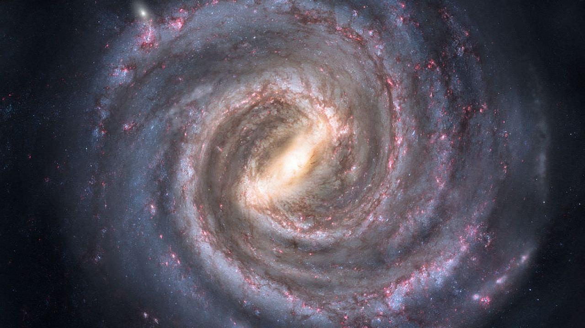
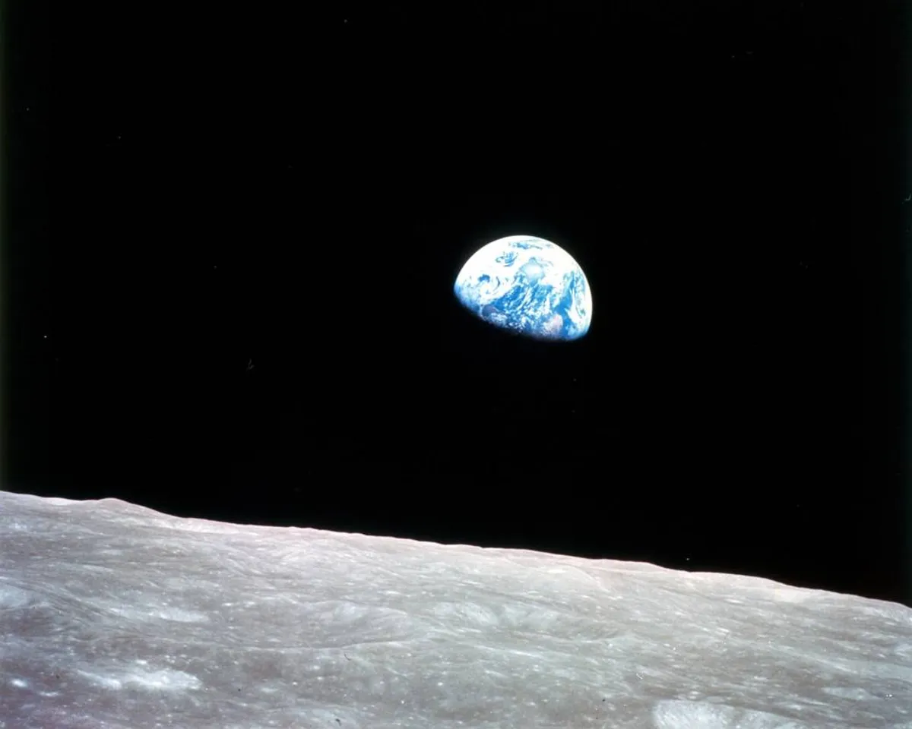
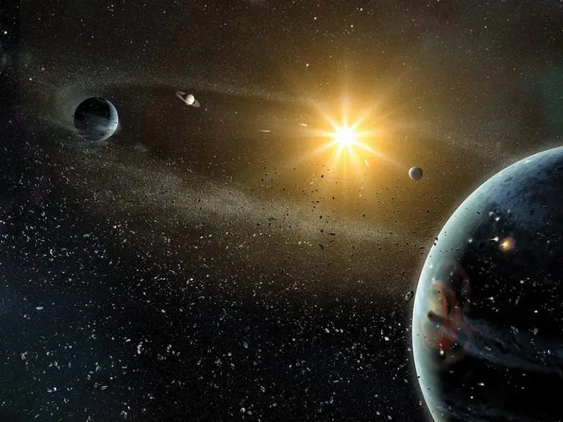

Intro
Here you will find facts and info on the cosmos as well as an overview of some of the topics mentioned on the other pages. To go more in depth, visit the other pages. Anything that is not found on the other pages has links to its respective wikipedia pages.
What Is The Cosmos?
The cosmos is a vast and mysterious vaccum that has fascinated humanity for centuries. It contains all of space, time, matter, and energy, and contains infinite galaxies, stars, planets, and other celestial bodies. Despite our scientific advances, a lot of the cosmos remains unexplored and unknown. The study of the cosmos also raises a variety of philosophical questions. What is the meaning of life in such an incomprehensible universe? Are we alone, or are there other intelligent beings out there? These are questions that have fascinated philosophers and scientists alike, and continue to inspire wonder in us all.
The Big Bang
The Big Bang is a scientific theory on how the universe came into existence. It states that the universe began as a singularity, a point of infinite density and temperature, and then expanded rapidly about 13.8 billion years ago. This set the stage for the formation of galaxies, stars, and eventually, life.
Time Dilation
Time dilation is a phenomenon that occurs when time appears to move slower for objects that are moving relative to an observer. According to the theory of relativity, the faster an object moves, the slower time appears to pass for that object. This means that time for an object or person traveling at near the speed of light will pass much slower than for a stationary person.
Planets
Planets are celestial bodies that orbit around a star and have a spherical shape due to their gravity. The eight planets in our solar system, in order from the sun, are Mercury, Venus, Earth, Mars, Jupiter, Saturn, Uranus, and Neptune. Planets can have a variety of characteristics, such as atmospheres, moons, and rings, and their study provides insights into the formation and evolution of our solar system and the universe.
Black Holes
Black holes are one of the most fascinating and mysterious objects in the universe. They are regions of space where the gravitational pull is so strong that nothing, not even light, can escape. Despite their name, black holes are not actually holes or empty spaces, but rather extremely dense objects with a singularity at their core.
The Multiverse
The multiverse theory is a speculative idea in physics and cosmology that suggests the existence of multiple parallel universes, each with its own unique set of physical laws and properties. This means that there is a universe where you have a completely different life and have a different family with different jobs.
Space Gallery
Here Are Some Pictures Of Space!
 |
 |  |  |